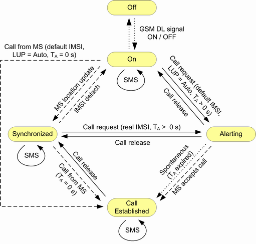

The main circuit switched (CS) connection states are described in the following table.
CS state | Description |
|---|---|
"Off" | No GSM downlink signal transmission |
"On" | The R&S CMW emulates a GSM cell, transmitting a DL GSM signal to which the mobile can synchronize. MS is or is not be synchronized to the cell signal, but no location update or attach has been performed. |
"Synchronized" | Synchronization and location update have been performed. |
"Alerting" | The R&S CMW or the MS is attempting a call. For a mobile terminated call, the MS is responding (ringing) but the connection is not yet established. For a mobile originated call, the MOC "Alerting Timeout" has not expired yet. This state is skipped for "MOC Alerting Timeout" = 0 s. |
"Call Established" | A call to/from the mobile has been established. The R&S CMW can vary connection parameters, perform transmitter and receiver tests, or initiate a handover. |
Control commands initiated by the R&S CMW or by the mobile switch between the CS states. The following figure shows possible state transitions.

- "Location Update"
Displayed during location update and preceding synchronization. When the necessary information has been exchanged (e.g. the real IMSI of the mobile), the connection state changes to "Synchronized". - "IMSI Detach"
Displayed during an IMSI detach. - "Connecting"
Displayed during call setup until a mobile originating call has been established or the mobile starts alerting for a mobile terminating call.
A call setup can be initiated after the mobile has completed synchronization to the downlink signal. Synchronization with location update ("Location Update = Always") results in state synchronized. For synchronization without location update ("Location Update = Auto") the state remains "On". See also "Location Update". - "Releasing"
The call is being released. - "Sending Message"
Displayed while an SMS message is sent to the MS. - "Receiving Message"
Displayed while an SMS message is received from the MS. To check the received message, see "Message Text / Message Length". - "Incoming Handover in Progress"
Displayed while an inter-RAT handover from another signaling application is performed. - "Outgoing Handover in Progress"
Displayed while an inter-RAT handover to another signaling application is performed. - "Handover: Dualband"
Indicates that the connection was handed over to a destination band different from the original GSM band, so that the BCCH and the TCH are now in different GSM bands. The message disappears when a handover back to the original GSM band is performed and the TCH uses again the same band as the BCCH.
See also "Mobility Management".